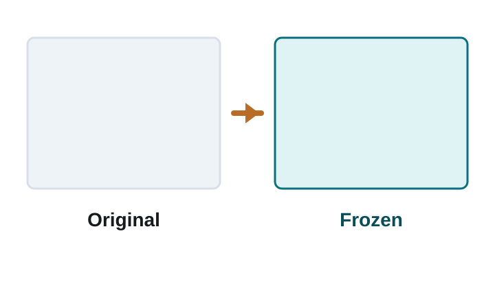
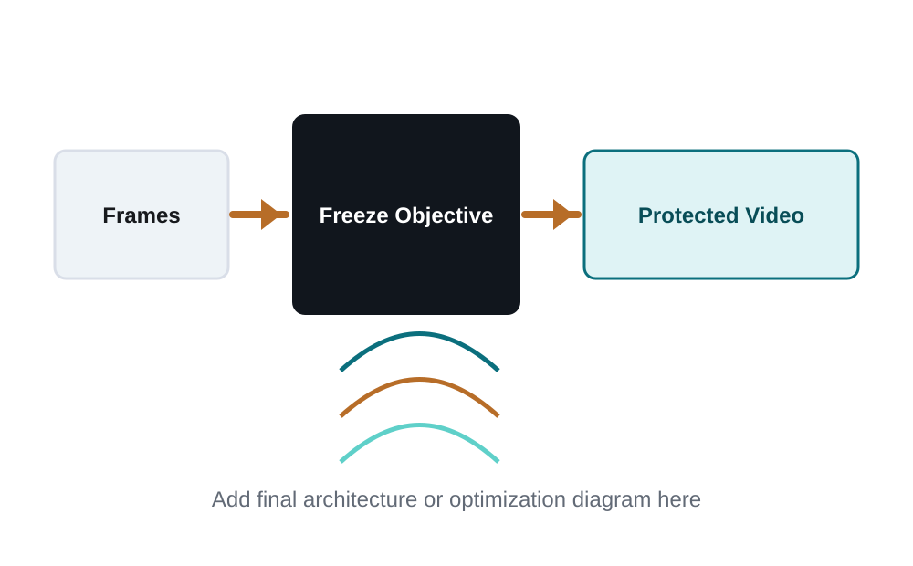
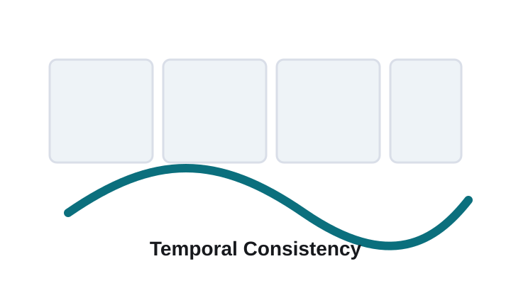
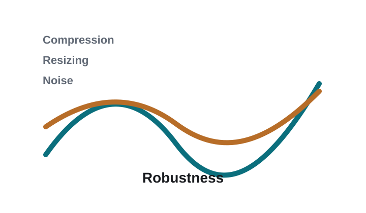

Protection against Editing
Show before/after comparisons against representative video editing models.
The rapid progress of image-to-video (I2V) generation models has introduced significant risks by enabling deceptive or malicious video synthesis from a single image. Prior I2V-specific-defenses attempt to immunize images by inducing spatio-temporal degradation, which does not necessarily provide meaningful protection, since residual motion can still convey malicious intent. In this work, we introduce Vid-Freeze -- a novel adversarial defense that adds imperceptible perturbations to enforce temporal freezing in generated videos. Our method explicitly targets attention dynamics in I2V models to suppress motion synthesis. As a result, immunized images produce standstill or near-static videos, effectively blocking malicious content generation. Experiments demonstrate strong protection across models and support temporal freezing as a promising direction for proactive and meaningful defense against I2V misuse.
The page is designed to communicate the core idea, method overview, qualitative comparisons, hosted video demonstrations, and citation details in a compact research-project format.
Vid-Freeze can be presented here as a compact pipeline: input video, protection or freezing objective, protected output, and downstream editing/generation evaluation.


Show before/after comparisons against representative video editing models.

Present frame-level and sequence-level evidence that protection remains stable over time.

Summarize robustness under compression, resizing, noise, and other purification transforms.
Video demonstrations of Vid-Freeze across representative editing and generation scenarios.
Vid-Freeze qualitative video result.
Vid-Freeze qualitative video result.
Vid-Freeze qualitative video result.
Vid-Freeze qualitative video result.
@inproceedings{vidfreeze2026,
title = {Vid-Freeze},
author = {Author One and Author Two and Author Three and Author Four},
booktitle = {Conference Name},
year = {2026}
}